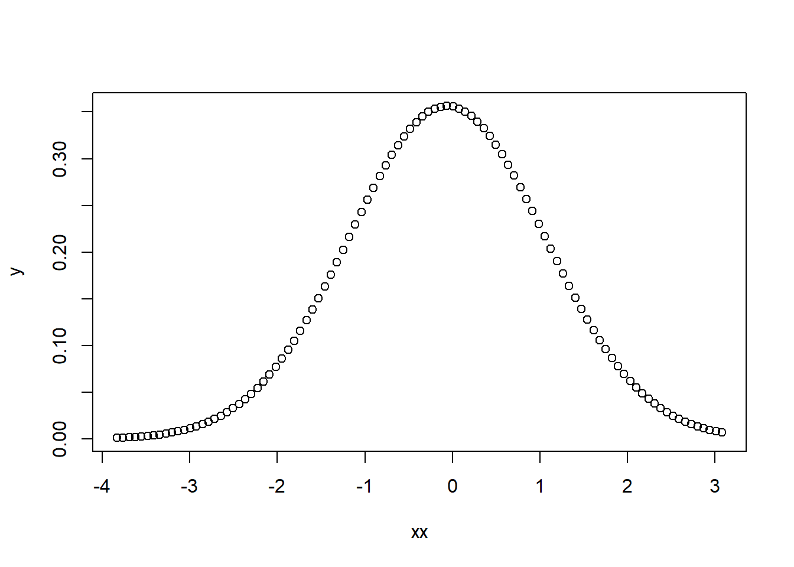
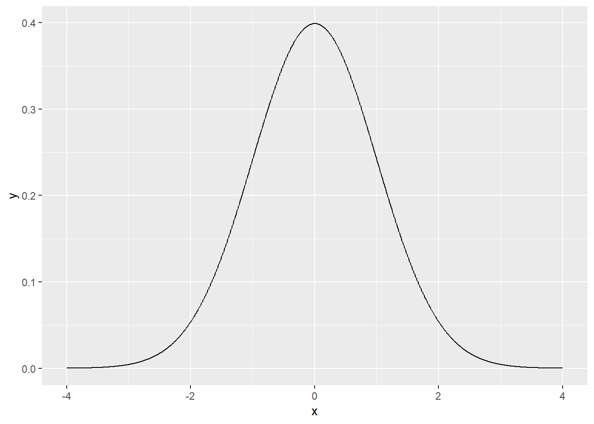

Chapter 7 Statistical inference
7.1 Introduction
통계적 추정이란 모집단으로부터 임의 추출된 표본을 이용하여 모집단을 추정하는 과정을 의미합니다. 앞에서 배운 내용이지만 다음 네 가지 중요한 키워드들이 있습니다.
- 모집단 (population)
- 모수 (Parameter) - 모집단의 분포를 설명하는 특정 값
- 표본 (sample) - 모집단으로부터 임의 추출된 관측값의 모음
- 통계량 (statistics) - 표본의 평균, 분산과 같은 대표값
다음은 표준정규분포 모집단에서 (모수: \(\mu, \sigma\)) 16개 표본을 임의 추출하여 평균을 (통계량) \(\bar{x}\) 구하고 이 과정을 10번 반복한 상황을 표현한 그림으로 통계적 추론의 과정을 보여 줍니다.
[UsingR for introductory statistics, 243 페이지]
- 임의 표본에 대해서 \(\bar{x}\)가 \(\mu\) 근처에 분포
- 임의 표본에 대해서 \(\bar{x}\)의 분산이 \(\bar{x}/\sqrt{n}\) 로 표현 (표본들의 분산보다 작음)
- 모분포가 정규분포이면 \(\bar{x}\)도 정규분포 (반복이 많아질수록, 중심극한정리)
- 시뮬레이션으로 이론 확인
7.2 Simulation
[EXERCISE] N(0, 1)의 분포를 dnorm을 이용해 그리시오 (xlim=c(-4,4))

[EXERCISE] 표준정규분포로부터 16개의 표본을 뽑아 평균을 구하고 각 표본과 평균 값들을 y=1 위치에 점으로 표현하시오 (rnorm사용)

[EXERCISE] 위 예제를 두 번 반복하되 두 번째 데이터는 y=0.9 위치에 표현하시오
library(ggplot2, quietly = T)
nsample <- 16
x <- rnorm(nsample*2, 0, 1)
y <- c(rep(1, nsample), rep(0.9, nsample))
g <- factor(c(rep(1, nsample), rep(2, nsample)))
dat <- data.frame(x, y, g)
ggplot(dat, aes(x, y)) +
geom_point() +
geom_point(aes(x=mean(x[1:nsample]), y=1), colour="blue", size=5, shape=15) +
geom_point(aes(x=mean(x[(nsample+1):length(x)]), y=0.9), colour="blue", size=5, shape=15) +
scale_y_continuous(limits=c(0, 1.2))
[EXERCISE] 위 예제를 10번 반복하되 각 반복 데이터는 각각 y=1, 0.9, 0.8, …, 0.1 위치에 표현하시오
suppressWarnings(suppressMessages(library(ggplot2, quietly = T)))
suppressWarnings(suppressMessages(library(dplyr, quietly = T)))
nsample <- 16
nrep <- 10
x <- rnorm(nsample*nrep, 0, 1)
tmpy <- seq(0.1, 1, length.out=nrep)
y <- rep(tmpy, each=nsample)
## ?rep
g <- factor(y)
dat <- data.frame(x, y, g)
dat_mean <- dat %>%
group_by(g) %>%
summarise(mean=mean(x))
ggplot(dat, aes(x, y)) +
geom_point() +
scale_y_continuous(limits=c(0, 1.1)) +
geom_point(data=dat_mean, aes(y=as.numeric(as.character(g)), x=mean), colour="blue", size=5, shape=15)
[EXERCISE] 위 예제와 함께 표준정규분포 곡선과 \(\bar{x}\)의 분포를 모두 같이 그리시오
7.3 Significance tests
두 그룹의 데이터 (표본)을 가지고 있을 때 두 그룹이 통계적으로 차이가 있는지를 검증하는 방법으로 (코흐트 데이터, Case-control 데이터) 시뮬레이션에 의한 방법을 먼저 소개하고 이 후 분포를 기준으로 통계적 검증을 알아보겠습니다.
카페인(커피)이 초초한 상태를 유발하는가? 라는 질문에 답하기 위해서 보통 두 그룹의 평균의 차이를 비교합니다.
coff <- c(245, 246, 246, 248, 248, 248, 250, 250, 250, 252)
nocoff <- c(242, 242, 242, 244, 244, 245, 246, 247, 248, 248)
dat <- data.frame(coff, nocoff)
obs <- with(dat, mean(coff) - mean(nocoff))
obs## [1] 3.5Randomization distribution 상태로 데이터를 다시 두 그룹으로 나누어 차이를 계산하고 이 과정을 반복해서 분포를 그려보겠습니다.
[EXERCISE] 두 그룹 데이터에서 임으로 10명을 두 번 뽑아 그 평균의 차이를 계산하시오
[EXERCISE] 위 예제의 과정을 1000번 반복하고 각 차이값의 분포를 그리시오
[EXERCISE] 분포에서 실제 관측한 3.5 값의 위치를 표시하고 관측값보다 더 극단적인 경우가 나올 경우의 비율을 계산하시오
7.4 Estimation and confidence interval
앞서 예제에서 두 그룹간 평균의 차이가 통계량 (statistic) 입니다. 통계량은 모수 (parameter)를 추정하기 위한 값으로 볼 수 있고 이 값이 얼마나 모수와 가까운지, 즉 차이가 0에 가까운지 판단하는 것은 통계적 추정에서 가장 중요한 부분 중 하나 입니다. 일반적으로 \(\mu, \sigma\) 등 모수는 \(\theta\)로 표현하고 \(\theta\)를 추정하기위한 통계량은 \(\hat{\theta}\)로 표현합니다. 다음 식으로 우리가 계산한 통계량이 얼마나 믿을만 한지에 대한 판단을 할 수 있습니다.
\[ E((\hat{\theta} - \theta)^2) = VAR(\hat{\theta}) + (E(\hat{\theta}-\theta))^2 = \text{variance} + \text{bias}^2 \] 우리가 언급하는 통계량들은 대부분 unbiased 입니다. 불편추정량 (unbiased estimator)이라 부르며 다음과 같은 것들이 있습니다.
- \(E(\bar{x}) = \mu\)
- \(E(\bar{p}) = p\)
- \(E(s^2) = \sigma^2\)